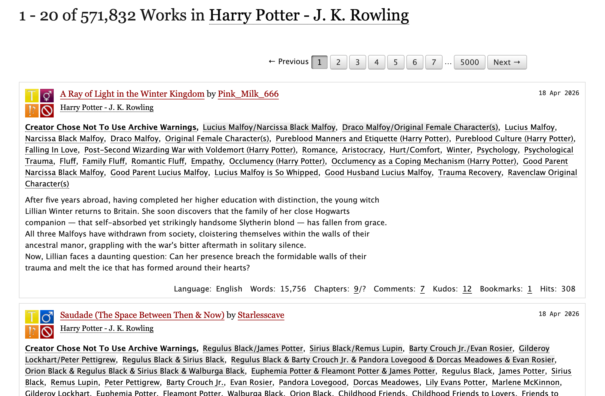
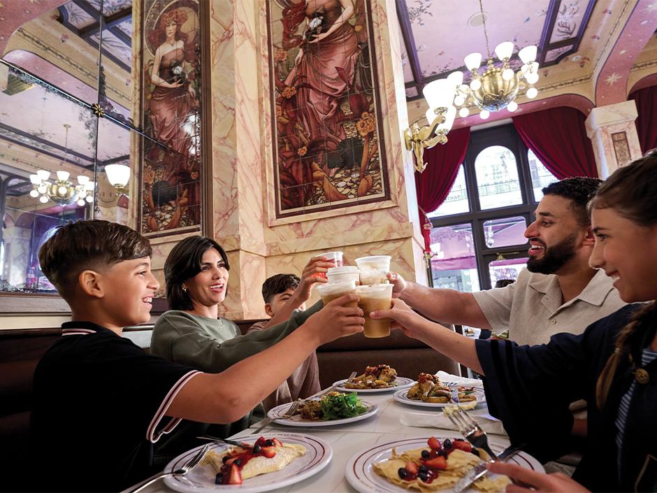

Select a folder tab to open a section.
FILE_01 · Introduction
Welcome to my E-Portfolio
Digital Marketing · MKT3039 · Assessment 2
Digital marketing's defining challenge is no longer attention but permission: securing sustained, willingly granted access to consumers in an environment that has structurally inverted the broadcaster–audience relationship. This e-portfolio examines how Warner Bros. Discovery's (WBD) Wizarding World franchise builds and sustains such permission across three decades of multi-channel brand architecture.
Four interlocking analyses argue a single thesis—that IP-rich brands accumulate permission not through campaigns but through infrastructure. File 02 maps the engagement ladder WBD has built; File 03 evaluates TikTok's structural fit to extend it; File 04 assesses HarryPotter.com's role in sustaining it; File 05 identifies the trend that operationalises it.
Student
Anh Hoang Tu Truong · 25832146
Module
MKT3039 · Digital Marketing
Programme
BA (Hons) Marketing Management
Partner Institution
Foreign Trade University, Hanoi
Navigate to a section
Portfolio overview
[add your image here]
[Optional caption for cover image]
File 02 · 546 words
Ladder of Engagement
How WBD built a five-rung permission infrastructure
The Ladder of Engagement, rooted in Godin's (1999) permission marketing philosophy, describes the progressive depth of consumer involvement with a brand, from passive consumption to active advocacy. The model holds that sustainable brand relationships compound incrementally rather than through interruptive mass communication. Table 1 defines the five rungs.
| Rung | Definition |
|---|---|
| Situational permission | Temporary consent granted in response to a specific consumer need or inquiry |
| Brand trust | Permission derived from the company's established reputation rather than individual interaction |
| Personal relationships | Trust built through direct, personal contact—powerful but difficult to scale |
| Points permission | Formalised loyalty maintained through reward currency that incentivises continued engagement |
| Intravenous permission | Full delegation of decision-making authority to the marketer, without requiring consent per transaction |
Table 1. The Permission Ladder (adapted from Godin, 1999, chapter 6).
At situational permission entry rung, consent is temporary and context-specific, granted in response to a particular need rather than any sustained relationship with the brand (Godin, 1999, chapter 6). For Harry Potter and the Wizarding World brand, this moment is crystallised through the Harry Potter books: Rowling's narrative converts a stranger into a willing audience through curiosity, word-of-mouth, or school-chum recommendation (Brown and Patterson, 2010, pp.547–548; Image 1).
Once situational permission is granted comes brand trust. This rung does not require the consumer to know the company personally—reputation alone is sufficient to sustain engagement, though Godin (1999, chapter 6) warns it is equally vulnerable to being squandered by poor marketing decisions. WBD's acquisition of the Harry Potter cinematic rights positioned the studio as the authoritative custodian of the franchise, with its identity as a major global media house lending institutional credibility to every subsequent release (Amrar, 2024). The cumulative worldwide gross of approximately £5.78B across the film series is evidence of brand trust operating at scale—audiences returned repeatedly not because they were individually persuaded, but because WBD had earned their anticipation (Box Office Mojo, no date-a – h).
Personal relationships rest on individual human trust rather than brand-to-consumer broadcasting, and cannot be manufactured by the marketer directly (Godin, 1999, chapter 6). The Wizarding World diverges from conventional brand strategy here: fan-fictions, tribute wikis, and "Wizard Rock" networks operate entirely outside WBD's control yet deepen brand permission on its behalf (Brown and Patterson, 2010, pp.544, 546; Image 2). Because WBD cannot own this rung, it must protect the conditions that sustain it—consistent lore and accessible canon (Brown and Patterson, 2010, p.551; Hashem et al., 2024, pp.20031, 20035).
At points permission, Godin (1999, chapter 6) describes formalised loyalty structures that make sustained attention materially worthwhile. WBD operationalises this through gamification: the Sorting Hat quiz on HarryPotter.com assigns house identity that functions as loyalty currency, shaping purchasing behaviour toward house-specific merchandise (Image 3). The Harry Potter Shop reinforces this through tiered products—from keyrings to personalised wands, Hogwarts trunks, and LEGO sets—structuring reward pathways at escalating investment levels (Brown, 2002, pp.9–10; Brown and Patterson, 2010, p.543; Warner Bros Merchandise, no date). The personalisation payoff is identity, not just products.
Intravenous permission represents the ceiling of Godin's ladder. WBD achieves this through two mechanisms—digital and physical. On HarryPotter.com, the Patronus experience and Sorting Hat quiz assign identity algorithmically, with fans accepting these designations as their own (Image 3). At the Wizarding World theme parks, this reaches its most literal expression: guests surrender to a brand-designed reality, allowing WBD to architect their sensory experience from arrival to exit (Brown, 2002, p.10; Hashem et al., 2024, pp.20027, 20039; Images 4–5).
Across all five rungs, WBD's engagement strategy demonstrates that permission compounds over decades, converting casual readers into lifelong brand participants who recruit others into the ladder beneath them.
Images 1–5 · Click a rung




File 03 · 732 words
TikTok Evaluation
Platform critique using Tuten & Solomon's (2018) Four Zones
3.1 · TikTok and the marketer's use case
TikTok launched globally in 2018 and reached over one billion monthly active users by 2023 (Bursztynsky, 2021). Its defining feature is the For You page (FYP), which releases each upload to a 500–1,000-user test audience and scales it only if watch-time and share signals clear internal thresholds (Chen, 2026). Content relevance outweighs creator popularity (Lang, 2025), so the conventional Paid-Owned-Earned hierarchy inverts (Chaffey and Ellis-Chadwick, 2022, p.6). Post legibility matters more than account strength. TikTok is therefore a distribution engine first and a community second.
3.1 · Orientation
Publishing and Entertainment are TikTok's dominant zones; Community and Commerce are attenuated. Cards below evidence the argument.
3.2 · Platform critique—the Four Zones framework
This section applies Tuten and Solomon's (2018, chapter 1) Four Zones framework, which groups social channels by primary orientation—community, publishing, entertainment, or commerce. Figure 1 maps TikTok's weighting across the four zones.
3.2.1 · Publishing
The social publishing zone concerns the production and distribution of content, with knowledge-sharing as its orientation (Tuten and Solomon, 2018, chapter 7). TikTok is architecturally optimised for this zone. The FYP treats every upload as a shareable unit, maximising circulation velocity (Lang, 2025). Branded Hashtag Challenges, TikTok's flagship publishing format (Chaffey and Ellis-Chadwick, 2022, p.447), turn a brand-seeded hashtag into a distribution scaffold for user-generated content. WBD's 2025 #BackToHogwarts Creator Challenge exemplifies the mechanic, with top entries accumulating 1M+ likes (The Harry Potter Editorial Team, 2025; Image 6). The @harrypotter profile's pinned HBO series promo reached 20.4M views (Image 7). For IP-rich brands, Publishing is TikTok's strongest zone and a deliberate strategic fit.
3.2.1 · Publishing
Image 6. The @harrypotter profile presents a carousel of pinned interactive formats (“Choose a Wand” / “Choose a Character”) and IP-led series promotion; 7.4M followers confirm the profile's role as a Publishing surface (compiled by Author, 2026).
3.2.2 · Community
Social communities are oriented around relationship-building rather than broadcasting (Tuten and Solomon, 2018, chapter 6). TikTok's architecture here is ambivalent: the comment system enables genuine multi-way exchange, yet the algorithmic feed dissipates durable group structure—what Kietzmann et al. (2011, pp.246–247) classify as a platform where "relationships hardly matter." The contradiction surfaces in organic fan activity. A video captioned "Everyone, pretend we're Hogwarts students in the comments," drew 3,427 threaded replies featuring in-character roleplay sustained across days (Image 8). This community interaction emerged on a fan account, not @harrypotter, and will likely disappear from the FYP within weeks. WBD benefits from spillover rather than cultivating community directly—consistent with File 02's finding that the Wizarding World's personal relationships rung is sustained by fan infrastructure (AO3, Fandom Wiki, Wizard Rock networks) that WBD cannot manufacture and TikTok cannot replicate.
3.2.2 · Community
Image 8. A fan-account video captioned “Everyone, pretend we're Hogwarts students in the comments,” drew 3,427 threaded replies in sustained, in-character roleplay—a Community moment emerging outside @harrypotter and structurally transient on the algorithmic feed (compiled by Author, 2026).
3.2.3 · Entertainment
The social entertainment zone is oriented around entertainment-sharing and play (Tuten and Solomon, 2018, chapter 8). TikTok is a structural fit. Trending sounds, AR filters, and duet mechanics are engineered for play-as-identity and play-as-fantasy (Tuten and Solomon, 2018, chapter 8). WBD leans into this logic. Interactive formats such as "Choose a wand to find the spell you need today" and "Choose a character (and swipe to reveal their quote)" (Image 6) invite identity performance and quiz-style engagement rather than information consumption. The brand positions itself inside the play-frame the platform rewards. Entertainment is TikTok's second area of deliberate, well-matched deployment.
3.2.3 · Entertainment
Potter, H. (2026) i could really do with scourgify rn because i do NOT want to do the dishes #harrypotter #magic #spells #wands… [TikTok] 19 April. Available at: https://vm.tiktok.com/ZTkQa4Cy4/ (Accessed: 24 April 2026).
3.2.4 · Commerce
The social commerce zone covers the use of social media to facilitate shopping and purchase (Tuten and Solomon, 2018, chapter 9). TikTok has developed commerce infrastructure—TikTok Shop, creator affiliate schemes, and shoppable links—but this zone remains the least mature (Tuten and Solomon, 2018, chapter 9). WBD's @harrypotter uses none of it. The profile bio directs users to Harrypotter.com (Image 6), and merchandise fulfilment is further delegated to an external Harry Potter Shop domain (see File 04). For a franchise with £5.78B in cumulative film revenues, this absence is deliberate: WBD treats TikTok as upstream funnel, reserving transactional activity for owned channels where the points permission rung (Godin, 1999, chapter 6) can be operationalised through persistent identity, gamified loyalty, and house-conditional merchandising.
3.2.4 · Commerce

The @harrypotter TikTok profile demonstrates a deliberate avoidance of platform-native commerce features; by funneling its 7.4M followers toward an external URL (HarryPotter.com), WBD reserves transactional data for owned ecosystems to be fully controlled and monetized through persistent user profiles.
3.3 · Implications for the engagement ladder
The Four Zones evaluation reveals an asymmetric fit. TikTok excels in Publishing and Entertainment—zones aligned with the lower rungs of Godin's (1999) ladder, and WBD exploits these effectively. The Community zone supports broadcast conversation and spillover fan activity but cannot replicate the durable, group-shaped infrastructure that sustains WBD's personal relationships rung. The Commerce zone is underdeveloped on both sides—platform and brand—a gap WBD resolves by offloading conversion to its owned-media architecture (File 04). TikTok is therefore best understood not as a ladder-extending platform but as an acquisition funnel, whose output must be transferred to owned channels where the upper rungs can actually be built.
File 04 · 196 words
Website Checklist
Evaluating HarryPotter.com's role in the ladder
HarryPotter.com serves as the Wizarding World franchise's primary owned-media destination. To evaluate its effectiveness in delivering the digital brand experience (see File 02), this section applies the Online Brand Equity framework of Christodoulides et al. (2006)—supplemented by two of Nielsen's (2012) five usability components to capture platform-level accessibility (Chaffey and Ellis-Chadwick, 2022, pp.286–287; 302). The navigational inventory of the site is reproduced on the right as an interactive companion; Tables 2–3 define the evaluation criteria and scoring rubric; Table 4 applies them to HarryPotter.com.
Table 2 · Evaluation Criteria
| # | Criterion | Definition |
|---|---|---|
| 1 | Emotional Connection | Extent to which users feel personally understood by, related to, and cared for by the brand |
| 2 | Online Experience | Ease of navigation, clarity of search paths, and speed of information retrieval |
| 3 | Responsive Service | Brand's willingness to respond to customer needs and provide dialogic opportunities |
| 4 | Trust | User confidence in data security and transactional safety |
| 5 | Fulfilment | Delivery of promised products, services, or experiences in the promised timeframe |
| 6 | Learnability | Ease with which first-time users can accomplish basic tasks on the site |
| 7 | Satisfaction | Overall pleasantness of the user's experience with the design |
Table 2. Website Evaluation Criteria (adapted from Christodoulides et al., 2006, and Nielsen, 2012, cited in Chaffey and Ellis-Chadwick, 2022, pp.286, 302).
Table 3 · Scoring Rubric
| # | Criterion | 1—Absent | 3—Developed | 5—Best-in-class |
|---|---|---|---|---|
| 1 | Emotional Connection | No personalisation or identity cues | Basic identity markers without dynamic content | Persistent identity with fully dynamic, identity-responsive content |
| 2 | Online Experience | Disorganised; no clear paths | Basic structure but inconsistent | Highly intuitive and well-structured |
| 3 | Responsive Service | No interaction channels | Limited feedback mechanism | Real-time dialogic engagement with brand response |
| 4 | Trust | No privacy, security, or credibility signals | Basic privacy policy and legal disclosures | Strong credibility, brand authority, visible data protection |
| 5 | Fulfilment | No product or service delivery | Standard delivery with basic tracking | Diverse, reliable fulfilment with flexible options |
| 6 | Learnability | First-time users cannot complete basic tasks | Basic onboarding with some guidance | Intuitive onboarding with visible progression and rewards |
| 7 | Satisfaction | Visually unpleasant or jarring | Cohesive design without distinctiveness | Immersive, brand-defining aesthetic experience |
Table 3. Scoring Rubric for Website Evaluation Criteria (1–5 scale; intermediate levels 2 and 4 in full report).
Table 4 · HarryPotter.com Evaluation
| # | Criterion | Score | Evidence & Comment |
|---|---|---|---|
| 1 | Emotional Connection | 5 | Hogwarts Sorting; Patronus Experience; Portrait Maker; Profile hub. Persistent identity markers drive dynamic house-themed content delivery—operationalising Godin's (1999) intravenous permission rung. |
| 2 | Online Experience | 4 | Nine-category navigation is logically clustered and consistent, though depth within Discover (five subsections) occasionally obscures pathways. |
| 3 | Responsive Service | 2 | WBD broadcasts outward through social channels but provides no dialogic return path on the site itself—a structural gap in two-way engagement. |
| 4 | Trust | 4 | Transparent legal scaffolding and visible WBD parentage lend institutional credibility; no third-party trust marks (e.g. Trustpilot) displayed. |
| 5 | Fulfilment | 4 | Clear pricing, sale markers, sold-out states; fulfilment delegated to the external Harry Potter Shop domain rather than integrated on-site. |
| 6 | Learnability | 5 | "Your Wizarding Checklist" gamified progression tracker guides first-time users through identity-building—textbook best practice. |
| 7 | Satisfaction | 5 | House-conditional theming, Wizarding World typography, ambient starfield backgrounds, Portrait Maker unlockables—immersive brand aesthetic. |
| Mean Score | 4.1 / 5.0 | ||
Table 4. Evaluation of HarryPotter.com.
HarryPotter.com scores strongly on brand-experience dimensions (Emotional Connection, Learnability, Satisfaction), reflecting WBD's architectural mastery of identity-based engagement. The Profile hub's persistent identity system (Image 3) operationalises the upper ladder rungs in File 02—a direct answer to the Honeycomb weakness identified in File 03. Responsive Service scores lowest: the site pushes users outward to social platforms rather than hosting dialogue internally, meaning upper-rung permission is architectural rather than conversational. The site functions less as a communication channel than as a brand-identity operating system—which, for this franchise, is exactly what it needs to be.
Structural mimic · harrypotter.com IA
Structural mimic of harrypotter.com's information architecture—the object evaluated on the left is reproduced as a reading companion on the right.
File 05 · 410 words
Trend Analysis
Brand Fusion & Talent-Participation UGC
TikTok's trend forecast identifies Brand Fusion as a strategic shift in which brands accumulate equity by participating within communities rather than broadcasting at them (TikTok, 2025; 2026), extending longer-standing academic work on brand–community co-creation (Chaffey and Ellis-Chadwick, 2022, p.245). Within this category, Talent-Participation User-Generated Content (UGC) has recently emerged: fan-initiated remix chains in which the original brand talent joins as co-participant rather than endorser (Chaffey and Ellis-Chadwick, 2022, p.424; Chaffey and Smith, 2022, pp.343–344).
The Pass the Phone challenge—in which creators film themselves stating "I'm passing the phone to someone who […]" before the video cuts to a new creator completing the premise—became a widely replicated remix format (Image 9).

Image 9. As of April 20, 2026, the #passthephonechallenge alone has generated 55,300 unique posts, facilitating rapid circulation across diverse niches—from educational institutions (British International School, VinUniversity) to global personalities (Mr.Beast, Stray Kids) (compiled by Author, 2026).
Its Wizarding World application is instructive. The chain originated from @miwallbank's "I look like Draco Malfoy" video (3.1M likes), which Tom Felton himself later joined—@miwallbank reenacting one of Draco's canonical lines (Wallbank, 2022a; 2022b; 2022c). Subsequent pass-the-phone chains built on this recognition, moving from a fan, to @miwallbank, to Felton, to a McGonagall cosplayer—each participant invoking a deeper layer of franchise authority (Williams, 2022). WBD commissioned no node in the chain.
This crystallises the portfolio's analytical arc. File 02 argued that the Wizarding World's Ladder is sustained by personal relationships outside direct brand control (Godin, 1999, chapter 6); File 03 found TikTok structurally attenuates the Groups and Relationships blocks (Kietzmann et al., 2011, p.243). Talent-Participation UGC resolves the contradiction: it does not require TikTok to host durable group architecture because the shared cultural object—Draco Malfoy as persona—is hosted in three decades of franchise permission. TikTok surfaces the remix chains; WBD's owned-channel infrastructure supplies the material being remixed.
More broadly, the trend suggests a strategic reorientation for brands operating on TikTok in 2026. The conventional "four levers" model—native creative, paid amplification, creator partnerships, hashtag challenges (Chaffey and Ellis-Chadwick, 2022, pp.447–449; Chaffey and Smith, 2022, pp.330–331)—assumes brand-initiated activation. Brand Fusion inverts this: for IP-rich brands, the correct posture is permission-based patience combined with selective amplification of organic remix chains, rather than campaign-driven activation. The implication is bifurcated: brands with deep cultural permission (Disney, Marvel, Wizarding World) can exploit Brand Fusion with minimal investment, whilst brands without that depth must first build it through owned-channel identity work before TikTok's algorithmic amplification can operate on their behalf. For WBD, the marketing task is no longer generating participation but protecting the conditions that sustain it—the same conclusion File 02 reached via a different route.
Chronological evidence
Passing-the-phone chain
2022
Wallbank, E. (2022a) 🥚 #fyp #foryoupage #harrypotter #dracomalfoy #blonde #fml #askontiktok #viral #car #comedy #funny #truestory #hair #uk #british #storytime #yorkshire [TikTok] 9 February. Available at: https://vm.tiktok.com/ZTkuW3TY2/ (Accessed: 20 April 2026).
Wallbank, E. (2022b) multiverse of madness 2: malfoy mayhem, meet my new friend @Tom Felton who just so happens to look a little… [TikTok] 16 October. Available at: https://vm.tiktok.com/ZTkHL8E7X/ (Accessed: 20 April 2026).
Williams, C. (2022) When you accidentally out blonde the Malfoy's 😂 what a surreal experience in a backstage corridor… [TikTok] 17 October. Available at: https://vm.tiktok.com/ZTku7QNjf/ (Accessed: 20 April 2026).
FILE_06 · Conclusion & References
Conclusion & Reference List
File 06 · 82 words · Harvard referencing throughout
Across four analyses, a single pattern emerges: the Wizarding World's digital strength lies less in any single platform or campaign than in the compound infrastructure of permission accumulated over three decades. TikTok cannot extend WBD's engagement ladder because it structurally attenuates the communities that sustain the upper rungs; HarryPotter.com can, because its architecture operationalises identity as loyalty currency; and Brand Fusion surfaces organically because the cultural material exists to be remixed. For IP-rich brands, the marketing task is protection, not activation.
References
- Amrar, S. (2024) Harry Potter and the IP empire. Available at: https://www.citma.org.uk/resources/harry-potter-and-the-ip-empire-blog.html (Accessed: 18 April 2026).
- Box Office Mojo (no date-a) Harry Potter and the chamber of secrets. Available at: https://www.boxofficemojo.com/title/tt0295297/ (Accessed: 18 April 2026).
- Box Office Mojo (no date-b) Harry Potter and the deathly hallows: part 1. Available at: https://www.boxofficemojo.com/title/tt0926084/ (Accessed: 18 April 2026).
- Box Office Mojo (no date-c) Harry Potter and the deathly hallows: part 2. Available at: https://www.boxofficemojo.com/title/tt1201607/ (Accessed: 18 April 2026).
- Box Office Mojo (no date-d) Harry Potter and the goblet of fire. Available at: https://www.boxofficemojo.com/title/tt0330373/ (Accessed: 18 April 2026).
- Box Office Mojo (no date-e) Harry Potter and the half-blood prince. Available at: https://www.boxofficemojo.com/title/tt0417741/ (Accessed: 18 April 2026).
- Box Office Mojo (no date-f) Harry Potter and the order of the phoenix. Available at: https://www.boxofficemojo.com/title/tt0373889/ (Accessed: 18 April 2026).
- Box Office Mojo (no date-g) Harry Potter and the prisoner of Azkaban. Available at: https://www.boxofficemojo.com/title/tt0304141/ (Accessed: 18 April 2026).
- Box Office Mojo (no date-h) Harry Potter and the sorcerer's stone. Available at: https://www.boxofficemojo.com/title/tt0241527/ (Accessed: 18 April 2026).
- Brown, S. (2002) 'Marketing for Muggles: The Harry Potter way to higher profits', Business Horizons, 45(1), pp.6–14. doi: 10.1016/s0007-6813(02)80004-0.
- Brown, S. and Patterson, A. (2010) 'Selling stories: Harry Potter and the marketing plot', Psychology and Marketing, 27(6), pp.541–556. doi: 10.1002/mar.20343.
- Bursztynsky, J. (2021) TikTok says 1 billion people use the app each month. Available at: https://www.cnbc.com/2021/09/27/tiktok-reaches-1-billion-monthly-users.html (Accessed: 22 April 2026).
- Chaffey, D. and Ellis-Chadwick, F. (2022) Digital marketing. Available at: https://ebookcentral.proquest.com/lib/northampton/detail.action?docID=6977555 (Accessed: 18 April 2026).
- Chaffey, D. and Smith, P.R. (2022) Digital marketing excellence: planning, optimizing and integrating online marketing. Available at: https://ebookcentral.proquest.com/lib/northampton/detail.action?docID=7013342 (Accessed: 18 April 2026).
- Chen, L. (2026) TikTok algorithm 2026: how it works for brands and what to do about it. Available at: https://greenfroglabs.com/blog/tiktok-algorithm-2026-brand-strategy (Accessed: 18 April 2026).
- [Entrance to the Métro-Floo at The Wizarding World of Harry Potter, Ministry of Magic] (2019) [Photograph]. Available at: https://blog.discoveruniversal.com/guides-and-tips/ultimate-guide-wizarding-world-harry-potter-universal-orlando-resort/ (Accessed: 18 April 2026).
- [Family toasting with Butterbeer in a Wizarding World restaurant] (2019) [Photograph]. Available at: https://blog.discoveruniversal.com/guides-and-tips/ultimate-guide-wizarding-world-harry-potter-universal-orlando-resort/ (Accessed: 18 April 2026).
- Godin, S. (1999) Permission marketing: turning strangers into friends and friends into customers. Available at: http://ci.nii.ac.jp/ncid/BA42544381 (Accessed: 18 April 2026).
- Hashem, T.N., Asad, S., Rifai, F. and Qtaish, R.M. (2024) 'The Wizarding World of Harry Potter: how to employ literary works as a source for branding and marketing?', Pakistan Journal of Life and Social Sciences (PJLSS), 22(2), pp.20027–20042. doi: 10.57239/pjlss-2024-22.2.001465.
- Kietzmann, J., Hermkens, K., McCarthy, I. and Silvestre, B. (2011) 'Social media? Get serious! Understanding the functional building blocks of social media', Business Horizons, 54(3), pp.241–251. doi: 10.1016/j.bushor.2011.01.005.
- Lang, K. (2025) TikTok algorithm guide 2026: everything we know about how videos are ranked. Available at: https://buffer.com/resources/tiktok-algorithm/ (Accessed: 18 April 2026).
- Sheppard, Z. (2007) Waiting for Harry Potter at Borders [Photograph]. Available at: https://www.flickr.com/photos/quikbeam/863762368/ (Accessed: 18 April 2026).
- The Harry Potter Editorial Team (2025) Try our new TikTok creator challenge for back to Hogwarts season. Available at: https://www.harrypotter.com/news/try-back-to-hogwarts-tiktok-creator-challenge (Accessed: 18 April 2026).
- TikTok (2025) TikTok what's next 2025 trend report. Available at: https://newsroom.tiktok.com/tiktok-whats-next-2025-trend-report-us (Accessed: 18 April 2026).
- TikTok (2026) Introducing TikTok next 2026: our trend forecast for marketers for the year ahead. Available at: https://newsroom.tiktok.com/introducing-tiktok-next-2026-our-trend-forecast-for-marketers-for-the-year-ahead (Accessed: 18 April 2026).
- TikTok Support (no date) Stitch. Available at: https://www.tiktok.com/support/faq_detail?id=7612493022214822420 (Accessed: 18 April 2026).
- Tuten, T.L. and Solomon, M.R. (2018) Social media marketing. 3rd edn. Available at: https://pdfcoffee.com/dtc-338-social-media-marketing-tracy-l-tuten-pdf-free.html (Accessed: 22 April 2026).
- Wallbank, E. (2022a) 🥚 #fyp #foryoupage #harrypotter #dracomalfoy #blonde #fml #askontiktok #viral #car #comedy #funny #truestory #hair #uk #british #storytime #yorkshire [TikTok] 9 February. Available at: https://vm.tiktok.com/ZTkuW3TY2/ (Accessed: 20 April 2026).
- Wallbank, E. (2022b) multiverse of madness 2: malfoy mayhem, meet my new friend @Tom Felton who just so happens to look a little... [TikTok] 16 October. Available at: https://vm.tiktok.com/ZTkHL8E7X/ (Accessed: 20 April 2026).
- Wallbank, E. (2022c) tiktok really did that huh, now i'm officially a slytherin 🐍 [TikTok] 18 October. Available at: https://vm.tiktok.com/ZTku7mDxK/ (Accessed: 20 April 2026).
- Warner Bros Merchandise (no date) Official Harry Potter Shop UK. Available at: https://harrypottershop.co.uk/ (Accessed: 18 April 2026).
- Williams, C. (2022) When you accidentally out blonde the Malfoy's 😂 what a surreal experience in a backstage corridor... [TikTok] 17 October. Available at: https://vm.tiktok.com/ZTku7QNjf/ (Accessed: 20 April 2026).